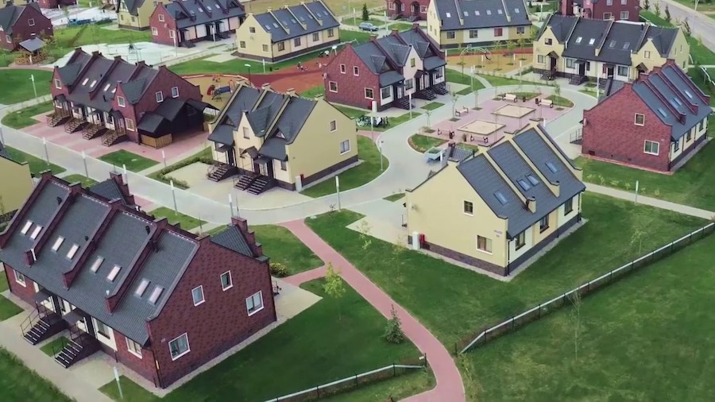
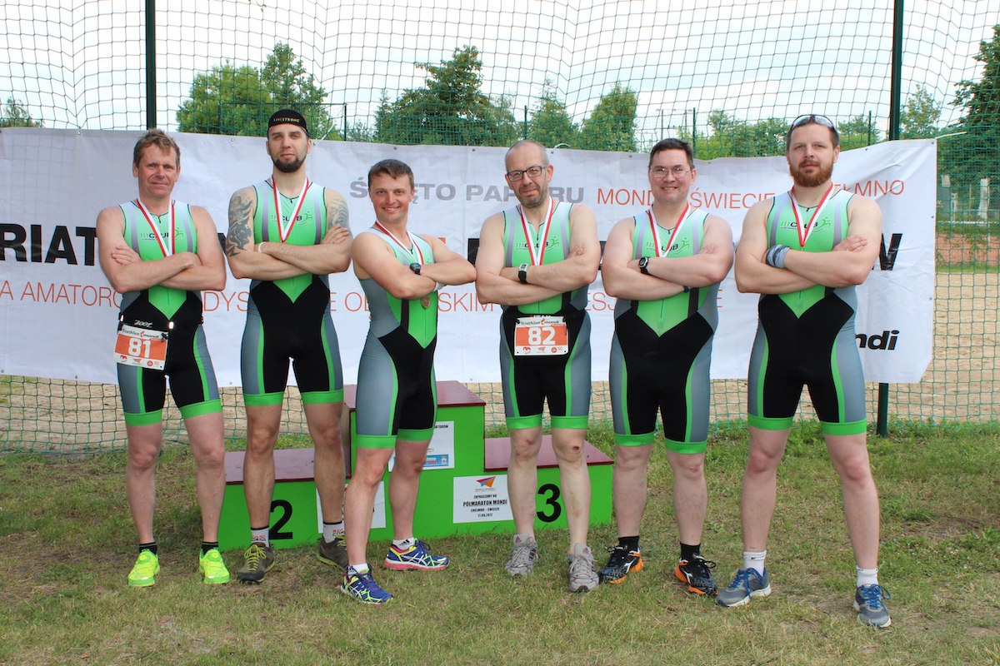
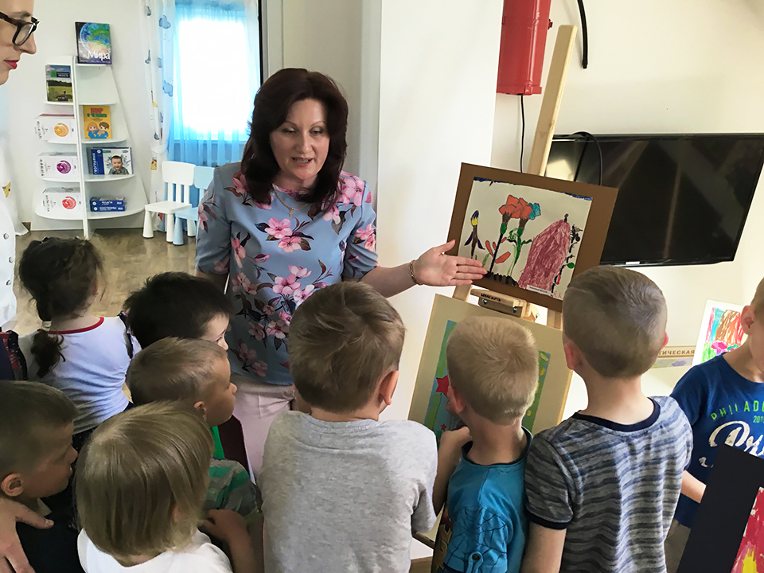
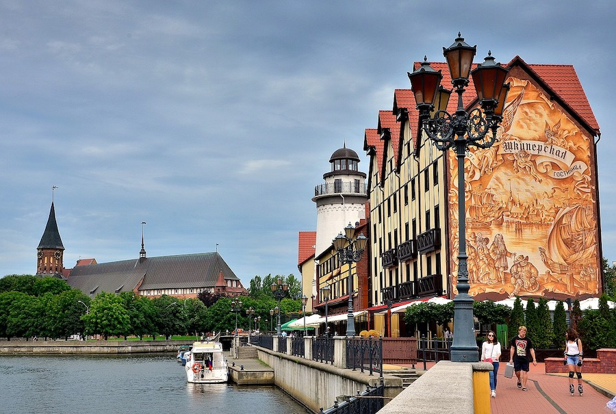

За годы жизни мы собрали всю полезную информацию в одном месте. Телефон администратора поселка, расписание автобусов, карта с номерами домов и остальная важная информация размещены на другой странице этого сайта.
О поселке
Инновационный кластер технополис GS располагается в двух километрах от города Гусев Калининградской области.
В городе будущего живут ведущие специалисты и программисты со всей России. Здесь создана благоприятная среда для роста ученых и появления новых инновационных разработок в сфере информационных технологий.
Продукты, созданные сотрудниками кластера, широко известны в России и за её пределами.

Сотрудники
Сотрудники GS Labs (центра исследований и разработок программных продуктов и потребительской электроники) активно сотрудничают с калининградским IT-сообществом и проводят митапы в БФУ им. И. Канта.

«Клуб 111»
Для поддержания физической формы и активного образа жизни инициативные сотрудники коттеджного посёлка создали «клуб 111» - клуб триатлона.

Члены клуба являются сотрудниками Технополис GS и регулярно принимают участие в международных соревнованиях по триатлону. Каждый год в августе на территории посёлка проходит открытый ежегодный чемпионат по триатлону. Больше подробностей можно узнаться на официальном сайте клуба
Волонтеры
Со времен Первой мировой войны прошел век. Казалось бы, восстановить утраченную память об одном из самых широкомасштабных вооружённых конфликтов уже невозможно, страшные сражения так и останутся забытыми, а герои — безымянными солдатами. А ведь Первая мировая была периодом массового героизма русских солдат. Сегодня ее история находится в тени Великой Отечественной войны.
В Калининградской области энтузиасты и волонтеры «Технополиса GS» стремятся исправить эту несправедливость и не дать времени окончательно уничтожить самое ценное — имена героев-победителей и память об их подвиге. На протяжении 6 лет они благоустраивают воинские захоронения: устанавливают имена павших солдат, ухаживают за могилами. К настоящему моменту им удалось найти и увековечить имена 37 воинов. Однако впереди ждет еще более масштабная работа.
Детский сад
На территории коттеджного посёлка находится детский сад, где для каждого ребенка формируется индивидуальная программа, которая учитывает возраст ребенка, интересы и его интеллектуальные способности.

Калининград
Рядом с городом будущего располагается город Калиниград - столица янтарного края. Прусская история с русской душой!

Вакансии
Наши двери открыты для специалистов и их семей. Близость моря, свежий воздух и Европа под рукой. Если вы задумываетесь о своём будущем, рассмотрите список наших открытых вакансий.
Список вакансий в Гусеве пуст ;(
Если по каким-то причинам вам не удалось найти свое место у нас, предлагаем рассмотреть вакансии ведущих ИТ компаний в Калининграде.
Список вакансий в Калининграде пока пуст ;(